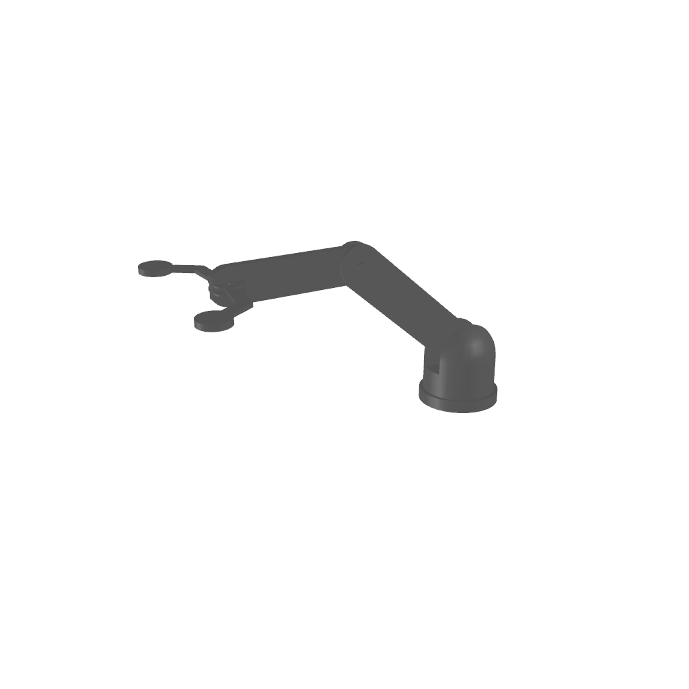
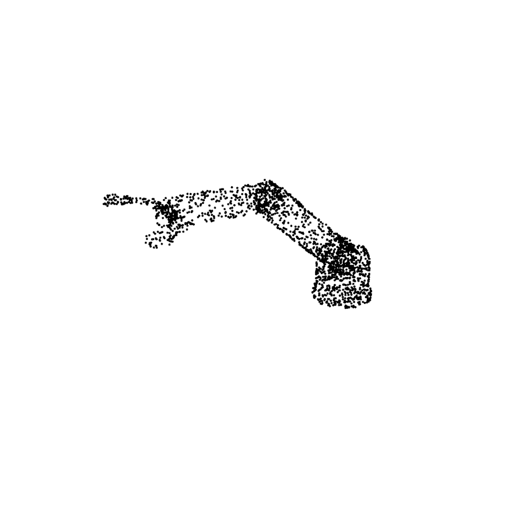
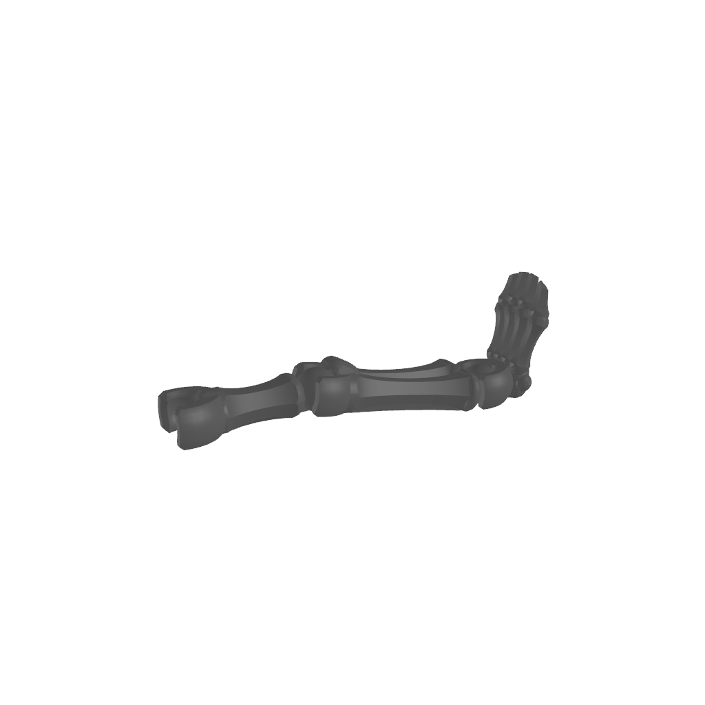
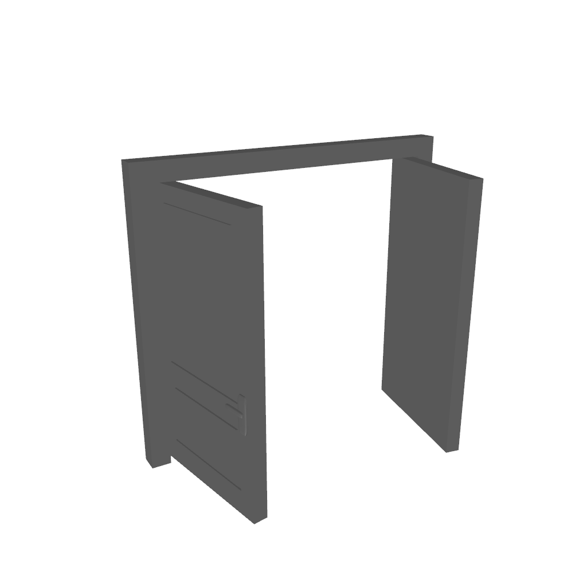
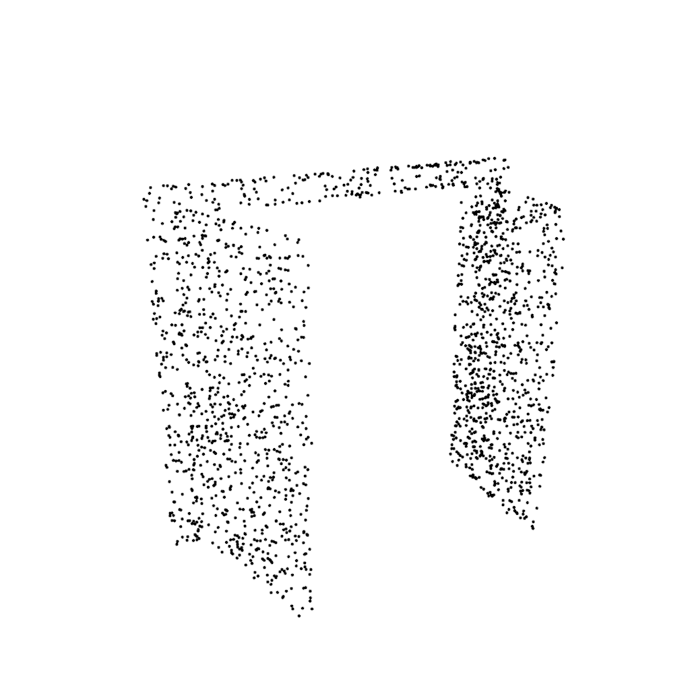
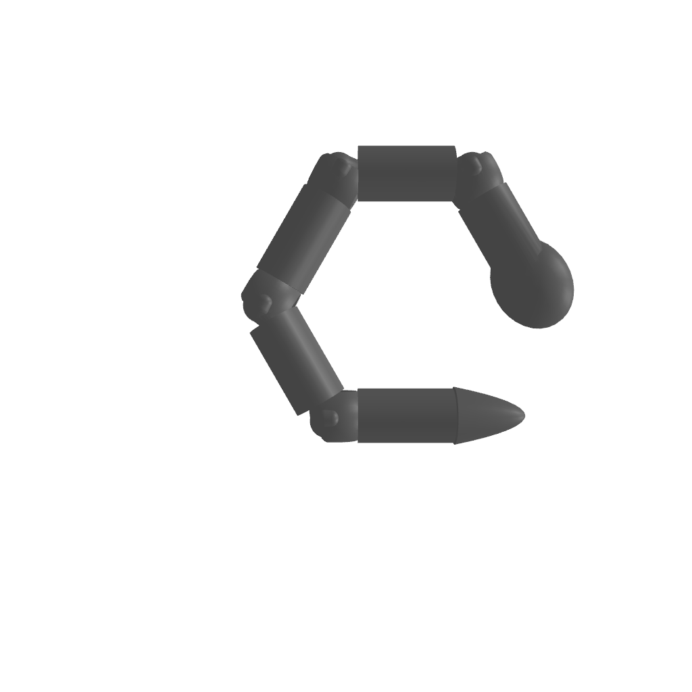
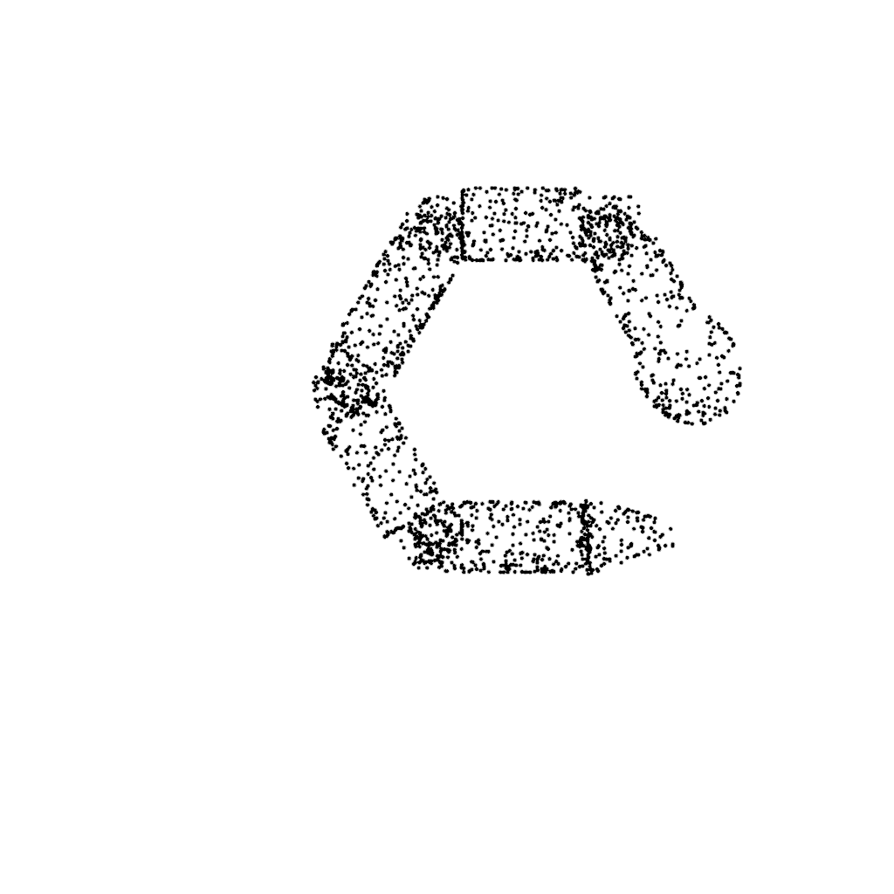

KinArt3D Dataset
Specifcation
Using nerfies you can create fun visual effects. This Dolly zoom effect would be impossible without nerfies since it would require going through a wall.
Deformable shapes
Point cloud sampling






